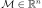
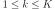
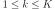

ProcessSample¶
(Source code, png, hires.png, pdf)
{kind=link}
{kind=link}

-
class
ProcessSample(*args)¶ Collection of fields.
- Available constructors:
ProcessSample(mesh, K, d)
ProcessSample(K, field)
- Parameters
Notes
A
ProcessSamplestores a sample of fields. We note K the number of fields contained in the process sample and d the dimension of the values associated to each vertex of the common mesh .These fields can be generated by a stochastic process.
In the first usage, we fix the common mesh with mesh, the number of fields contained in the sample with K and the dimension of the values with d. The values of the fields are by default fixed to zero.
In the second usage, the collection of fields is filled with K copies of the given field field.
We note the value of the field k at the vertex i. We note N the number of vertices of
 , with and .
, with and .Examples
Create a bi dimensional mesh as a box:
>>> import openturns as ot >>> myIndices = [10, 5] >>> myMesher = ot.IntervalMesher(myIndices) >>> lowerBound = [0.0, 0.0] >>> upperBound = [2.0, 1.0] >>> myInterval = ot.Interval(lowerBound, upperBound) >>> myMesh = myMesher.build(myInterval)
Create a second order normal porcess of dimension 3:
>>> amplitude = [5] >>> scale = [3, 3] >>> model = ot.ExponentialModel(scale, amplitude) >>> myProcess = ot.GaussianProcess(model, myMesh)
Generate a sample of different fields:
>>> n = 10 >>> mySampleFields = myProcess.getSample(n)
Duplicate the same field:
>>> myField = myProcess.getRealization() >>> n = 10 >>> mySampleFields2 = ot.ProcessSample(n, myField)
- Attributes
thisownThe membership flag
Methods
add(*args)Add a field to the collection.
Compute the mean field of the collection of fields.
computeQuantilePerComponent(*args)Compute the temporal mean of the values of the fields.
Compute the spatial mean of the values of the fields.
Compute the temporal mean of the values of the fields.
drawMarginal([index, interpolate])Draw the selected field.
Accessor to the object’s name.
Get the dimension of the values of fields.
getId()Accessor to the object’s id.
getImplementation(*args)Accessor to the underlying implementation.
getMarginal(*args)Marginal sample accessor.
getMesh()Get the mesh of the fields.
getName()Accessor to the object’s name.
getSize()Get the size of the collection of fields.
Get the time grid of the fields.
setName(name)Accessor to the object’s name.
-
__init__(*args)¶ Initialize self. See help(type(self)) for accurate signature.
-
add(*args)¶ Add a field to the collection.
- Parameters
- field
Field A new field to add. This field shares the same mesh and the same dimension as the other fields of the collection.
- field
-
computeMean()¶ Compute the mean field of the collection of fields.
- Returns
- mean
Field The mean field has the same dimension d and the same mesh as the fields contained in the collection. At each vertex of the mesh, we calculate the mean of the values at this vertex of the K fields contained in the process sample:
- mean
-
computeQuantilePerComponent(*args)¶ Compute the temporal mean of the values of the fields.
- Parameters
- pfloat,
 , or sequence of float
, or sequence of float Order of the quantile.
- pfloat,
- Returns
- quantile
FieldorProcessSample This field has the same size and the same dimension as the fields of the collection. At each vertex of the mesh, we estimate the component-wise quantile of order p, using the empirical quantile.
- quantile
-
computeSpatialMean()¶ Compute the spatial mean of the values of the fields.
- Returns
- spatialMean
Sample Its size is the number K of fields in the collection. Its dimension is d. The k numerical point is the spatial mean of the field k:
- spatialMean
-
computeTemporalMean()¶ Compute the temporal mean of the values of the fields.
- Returns
- spatialMean
Sample Its size is the number K of fields in the collection. Its dimension is d. The k numerical point is the temporal mean of the field k:
- This method can be used only when the mesh can be interpreted as a regular grid.
- spatialMean
-
drawMarginal(index=0, interpolate=True)¶ Draw the selected field.
- Parameters
- indiceint
Index of the field that is drawn in the graph.
- interpolatebool (optional, default=True)
Whether to draw interpolated values.
- Returns
- graph
Graph The graph of the selected field using the interpolate method.
- graph
-
getClassName()¶ Accessor to the object’s name.
- Returns
- class_namestr
The object class name (object.__class__.__name__).
-
getDimension()¶ Get the dimension of the values of fields.
- Returns
- dint
Dimension of the values of the fields.
-
getId()¶ Accessor to the object’s id.
- Returns
- idint
Internal unique identifier.
-
getImplementation(*args)¶ Accessor to the underlying implementation.
- Returns
- implImplementation
The implementation class.
-
getMarginal(*args)¶ Marginal sample accessor.
- Parameters
- indiceint or sequence of int
Index of the marginals.
- Returns
- sample
ProcessSample The marginal sample.
- sample
-
getMesh()¶ Get the mesh of the fields.
- Returns
- mesh
Mesh The mesh shared by all the fields of the collection.
- mesh
-
getName()¶ Accessor to the object’s name.
- Returns
- namestr
The name of the object.
-
getSize()¶ Get the size of the collection of fields.
- Returns
- Kint
Number of fields in the collection.
-
getTimeGrid()¶ Get the time grid of the fields.
- Returns
- mesh
RegularGrid The time grid shared by all the fields of the collection. Can be used only if the mesh can be interpreted as a regular time grid.
- mesh
-
setName(name)¶ Accessor to the object’s name.
- Parameters
- namestr
The name of the object.
-
thisown¶ The membership flag